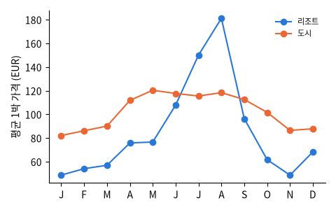
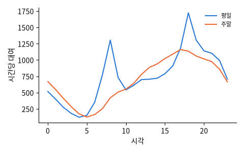

커머스 · 콘텐츠

01개인화 추천
패션 커머스: 비슷한 옷 추천
들어가 보기
02브랜드 · 콘텐츠 마케팅
쇼핑몰 구매 전환 예측
들어가 보기
03개인화 추천
영화 · 동영상 추천
들어가 보기
04리뷰 분석
한국어 리뷰 감성 분석
들어가 보기금융 · 핀테크

플랫폼 · 서비스

06대화형 인공지능
고객 문의 자동 분류
들어가 보기
07실시간 가격책정
여행 예약: 취소와 가격
들어가 보기
08링크 예측 (Link Prediction)
연결 예측: 사람 · 친구 추천
들어가 보기
09수요예측
공유 자전거 수요 예측
들어가 보기제조

10수율 · 불량 예측
반도체 공정 불량 예측
들어가 보기
11예지보전
설비 고장 예측 (예지보전)
들어가 보기
12품질 검사
강판 표면 결함 분류
들어가 보기
13진동 · 센서 신호
베어링 진동으로 고장 진단
들어가 보기